Redes de Comunicação
Olá amigo,
estou a desenvolver este site no âmbito da disciplina de Redes de Comunicação que visa desempenhar um papel infraestrutural que suporta os vários Sistemas de Informação, permitindo a interligação de uma vasta gama de equipamentos, para isso conto com os meus professores Carlos Baptista & Adelino Amaral a quem presto agradecimento.
Simão Costa
